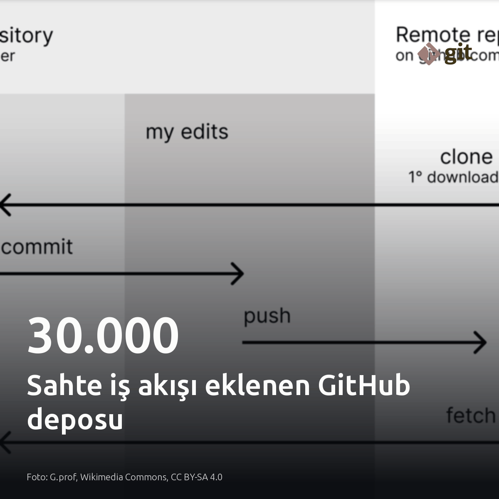
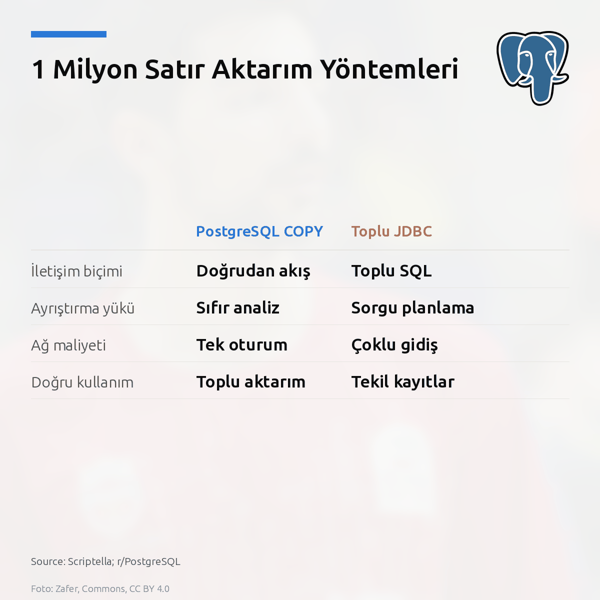
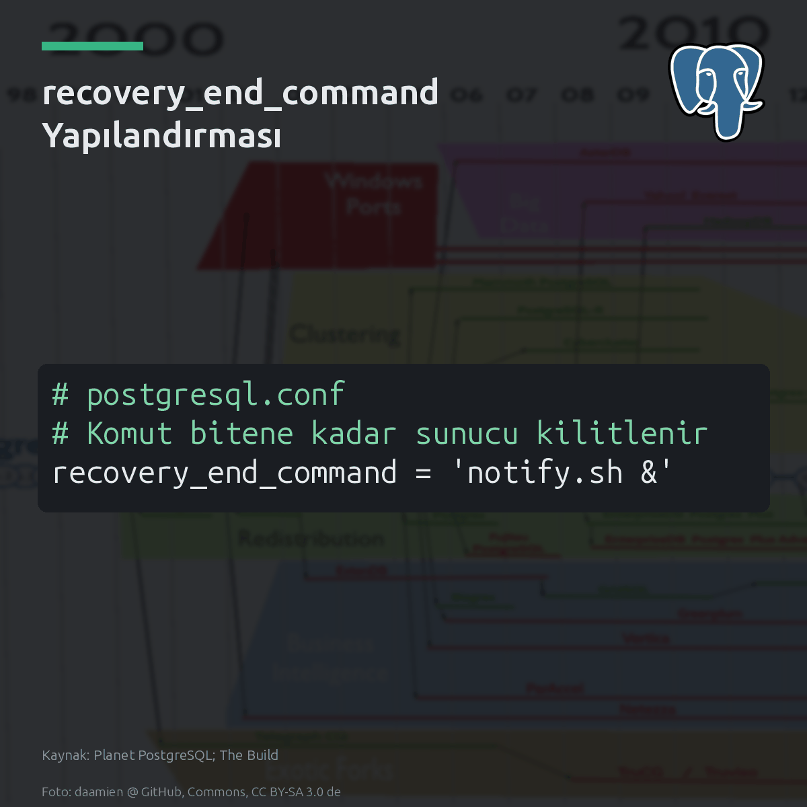
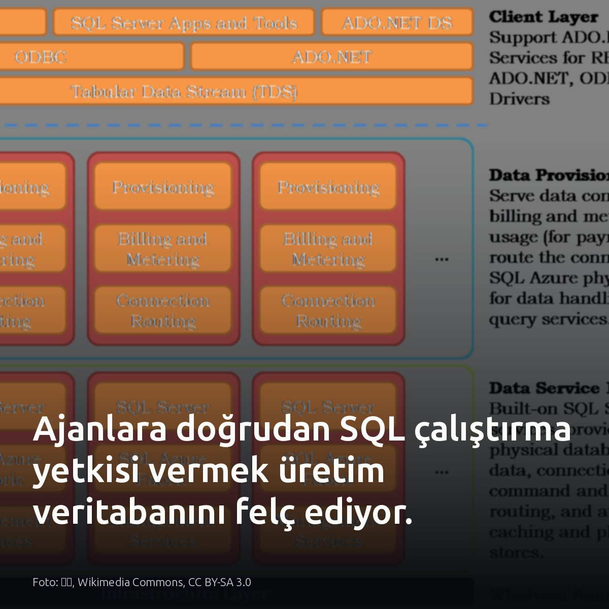

Metni kopyala, kartı indir, LinkedIn'de yapıştır. Bağlantılar gönderiye değil ilk yoruma.

GhostAction, 30.000'den fazla depoya sahte iş akışı ekleyerek statik bulut anahtarlarını çaldı. Kalıcı kimlikler açık hedef. CI ortamında uzun ömürlü servis hesabı anahtarı saklamak yerine kısa ömürlü OIDC belirteçlerine geçmek bu saldırı yüzeyini kapatıyor. #cicd #devops #cloudsecurityKartı indir
Kaynaklar ve detaylar: - GhostAction analizi ve CI güvenliği: https://medium.com/google-cloud/your-github-actions-dont-need-a-google-cloud-key-delete-it-in-15-minutes-a9e3f0796922?source=rss------devops-5 - Workload Identity Federasyonu ve OIDC: https://tailscale.com/blog/workload-identity-beta

1 milyon satırlık CSV aktarımında PostgreSQL yerel COPY protokolü, toplu JDBC yöntemini geride bıraktı. COPY, ayrıştırma adımını atlar. Scriptella kıyaslamasında elle yazılan toplu JDBC aktarımı csvsql'i geride bıraksa da PostgreSQL tarafında en kısa süreyi yerel COPY verdi. Büyük veri yüklemelerinde COPY protokolünü, anlık ve işlem bütünlüğü gerektiren satırlarda ise standart insert'i seçin. Gecelik aktarımlarda `pg_stat_activity` üzerindeki kilit bekleme olaylarına bakın. #postgresql #dba #etlKartı indir
Kaynaklar ve test detayları: - Scriptella benchmark verileri: https://github.com/scriptella/scriptella-benchmarks - r/PostgreSQL tartışması: https://www.reddit.com/r/PostgreSQL/comments/1x9zbt1/postgresql_copy_vs_batched_jdbc_importing_1/ Görsel kaynağı: Scriptella; r/PostgreSQL

PostgreSQL terfi ederken recovery_end_command bitene kadar tek bir yazma bile alamaz. Failover saati ise durmaz. Düğüm timeline 2 üzerinde görünür; pg_is_in_recovery() doğru dönse de sunucu ne kurtarma yapar ne de yazmaya hazırdır. Ağ çağrısı yapan betikler terfi anında düğümü kilitler. postgresql.conf içindeki komutun arka plana devredilmesi şart. Bu risk, harici kanca tanımlamayan mimarilerde geçerli değildir. #postgresql #databaseadministration #highavailabilityKartı indir
Kaynaklar ve detaylı okuma: - Görsel/Kart kaynağı: Planet PostgreSQL; The Build - Christophe Pettus, All Your GUCs in a Row: recovery_end_command: https://postgr.es/p/9z6

Ajanlara doğrudan SQL çalıştırma yetkisi vermenin analizi hızlandıracağı sanılıyor; üretimde sonuç tam tersi. Çoğu demoda modele serbest bir sorgu aracı tanımlanıp veritabanına doğrudan erişim veriliyor. Oysa istemci taraflı kısıtlamalar dakikalar içinde aşılabiliyor. Önceden kurulmuş bir inceleme adımı yoksa kontrolsüz bir sorgu canlı tabloda anında yürütülüyor. Bağlantı havuzu tükeniyor. Modeli doğrudan veritabanına bağlamak yerine, her sorguyu çalıştırmadan önce 5 aşamalı bir güvenlik hattından geçirmek şart. #postgresql #database #aiagentsKartı indir
Yazıda geçen kaynaklar ve görsel referansı: Görsel: 小朱, Wikimedia Commons, CC BY-SA 3.0 [S1] Medium: https://medium.com/@judewakim/my-ai-agent-never-touches-the-database-e8f19c763e95?source=rss------database-5 [S3], [S4] Tiger Data: https://www.tigerdata.com/blog/ai-agent-production-database-access [S5] Faz: https://github.com/fazhq/faz
Meta'nın yapay zekâ asistanı Muse'a ait 6.800'den fazla özel sohbet kaydı arama motorlarında indexlendi. Claroc araştırmacıları bu bağlantıları genel DNS kayıtları üzerinden tespit etti. Muse paylaşılan sohbet URL'lerini başlık, açıklama metni ve rastgele kimlikle üretiyor. Uç noktada doğrulama yoktu. Sunucu yanıtında noindex HTTP başlığı bulunmadığı için botlar sayfaları meşru web içeriği sayıp index'e aldı. Açığa çıkan verilerde şirket gelirleri, çalışma takvimleri ve kredi başvuruları yer alıyor. ChatGPT, Claude ve Grok da aynı hatayı yapmıştı. Erişim denetimi ve noindex başlığı bulunmayan sistemlerde tahmin edilemeyen URL yapısı veriyi korumuyor. #appsec #sibergüvenlik #verigüvenliğiKartı indir
Kaynaklar: - Görsel kaynağı: Karel Škréta, Wikimedia Commons, CC0 - [S3] Claroc araştırması ve 6.800+ bağlantı: https://www.theverge.com/tech/1014627/meta-muse-ai-sharing-ai-chats - [S4] Hassas veri sızıntısı bulguları: https://www.theverge.com/tech/1014627/meta-muse-ai-sharing-ai-chats - [S5] Muse dinamik URL yapısı: https://www.theverge.com/tech/1014627/meta-muse-ai-sharing-ai-chats - [S6] ChatGPT, Claude ve Grok emsalleri: https://www.theverge.com/tech/1014627/meta-muse-ai-sharing-ai-chats